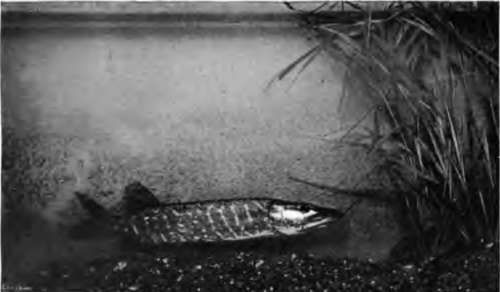
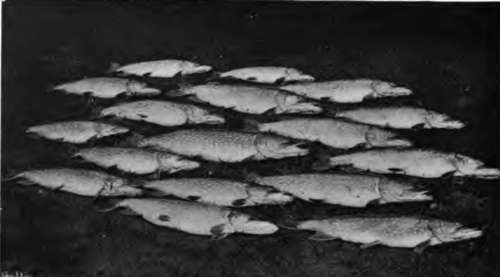
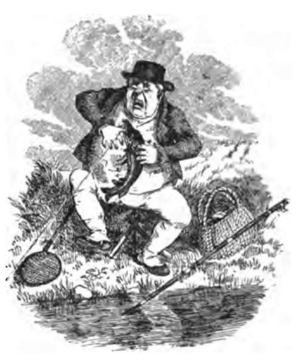
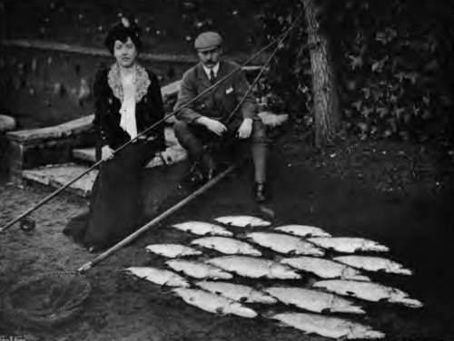
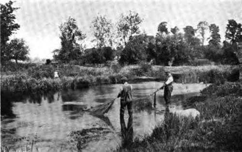
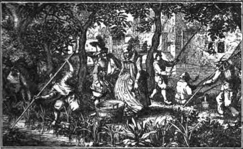

Chapter VII. Fishing For Pike: The Quarry
Description
This section is from the book "Fishing", by Horace G. Hutchinson. Also available from Amazon: Fishing.
Chapter VII. Fishing For Pike: The Quarry
Pike, jack, or pickerel, as the same fish is variously called according to its age and size, are the only recognised species of Esox-lucius found in the rivers and lakes of Great Britain, or known in Europe, although it is possible other varieties may yet be discovered. The pike is the typical representative of the Esocida family, in which the dorsal fin is set far back in the body, and nearly opposite or perpendicular to the anal fin. The body is elongated, of nearly uniform depth from head to commencement of back fin; the back is rounded, sides compressed and covered with small scales, and the length of head is as one to four, when compared with the extreme length of fish from nose to tail. The head is flattened; the lower jaw the longer, with extensive gape; the upper jaw is blunt and rather duck-billed in shape. Both jaws have five or six sharp and formidable teeth on each side; the vomer and palatine bones are furnished with teeth of various sizes pointing inwards and downwards towards the throat. This phalanx of terrible weapons has hinged bases of attachment, so that while they favour the entry of the pike's prey any escape is impossible, for they then fly up like so many harpoon-blades and hold it the firmer; but no teeth are on the maxillary bones. The eyes are placed high and nearly on the top of the head, so that pike may be better able to see their prey swimming over and above them. The tail is rather forked, large, and a powerful propeller, enabling the pike to dart or spring suddenly on any incautious trout, dace, or roach that ventures too near to " The wary luce, 'midst wrack and rushes hid, The scourge and terror of the scaly brood."
12.- Resting Motionless Sutported By His Pectoral Fins.
13.- A Catch Of Pike At Wargrave.
Ausonius, who lived a.d. 309, wrote thus of the pike; and Ossian, who was born during the fourth century of the Christian era, in his writings describes trolling for pike; also, Pliny states that pike of very great size, were taken in the Tiber, although some naturalists doubt whether Pliny's Esox were of the same kind as the pike of modern ichthyology. There appear to be five or six varieties of Esox inhabiting the lakes and rivers of America: viz., " Masca-longe " (Lucius masquinongf), of which specimens exceeding 60 lbs. weight have been captured in the nets at Chautauqua Lake; "Pike" (Lucius lucius), which grow to 40 lbs.; the " Northern-pickerel " (Esox luci cedes)-both the latter are found in the great lakes; " Pickerel" (Lucius reticulars), of the ponds and streams, seldom exceed 4 lbs.; " Little Pickerel " (Lucius vermkulatus) grows to 12 inches length; and the 44 Banded-pickerel" (Lucius americanus), which is marked with about twenty distinct blackish curved bars on each of its sides, and has a black bar before the eye-this variety is found in the Western waters. The marking and colouring of British pike differ somewhat according to season and the water they were captured in. In spring and summer, while aquatic vegetation is luxuriant, they are mottled with white, yellow, and green; in autumn and winter with olive brown mottled with green, thus assimilating to the surrounding conditions of decaying weeds and sedges. The head and back are dark olive brown; tail, anal, and dorsal fin, dark brown mixed with red and dark green on the fin-rays; the pectoral and ventral fins are pale brown and the gills a vivid red. That well-known naturalist, the late Mr. Frank Buck-land, thought pike had probably been introduced to British waters, but as they were caught in the Thames at Lambeth, according to old records, in the year 1277, and frequently afterwards at the same place; also in the Cherwell and Isis, Oxfordshire, and in the river Cam in 1342, I should imagine they were indigenous to this country.
These fish are also mentioned in an " Act" of the sixth year (1382) of King Richard II.'s reign; and by Chaucer (1380-1395) in his well-known lines-
" Full many a fair partrich hadde he in me we, And many a breme, and many a Luce in stewe. • ."
That pike were plentiful in the fourteenth and fifteenth centuries is proved by the following ex tracts from vol. vi. of Leland's Collectanea, by which we are informed that in the year
1404, pike cost £5, | 0s. | 0d. | the hundred. |
1472 | 2s. | 0d. | each. |
1530 | 3s. | 6d. | |
1532 | 4s. | 0d. |
In the reign of Henry VIII. (1540-1547) they cost as much again as house-lamb in February; and a very small pickerel was dearer than a fat capon.
That pike were highly esteemed as forming part in the menus of civic and ecclesiastical banquets during the fifteenth and sixteenth centuries may be inferred from Leland's notice of the great feasts, griven at the " inthronizations" of the Archbishop of York in 1467, and of the Archbishop of Canterbury in 1504,1 where, amongst other strange dishes, such as " seals and porpoises," " roast sturgeons and congers," " baked salmon and lobsters," " tench in jelly," etc, Esox lucius appeared as " pyke in satin," "pyke in oil," "pyke in herblade," in "latmer sauce," in " sharp sauce," " Luce salt," and " pyke with bremes."
1 Leland's Collectanea (edit 1774), vol. vi.
"Lo! the rich pike, to entertain your guest, Smokes on the board, and decks a royal least."
14.- Pike And Their Captors-wargrave.
15.- Netting Out The Pike

Continue to:
- prev: Chapter VI. The Pike (Esox)
- Table of Contents
- next: Chapter VIII. Fishing For Pike: History And Habits